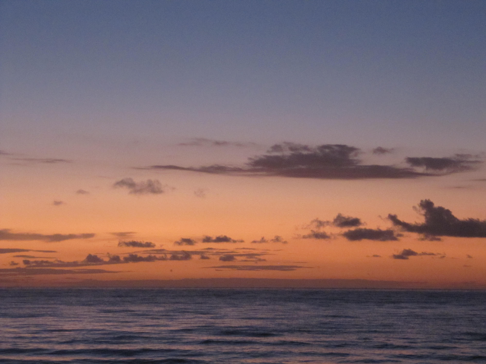
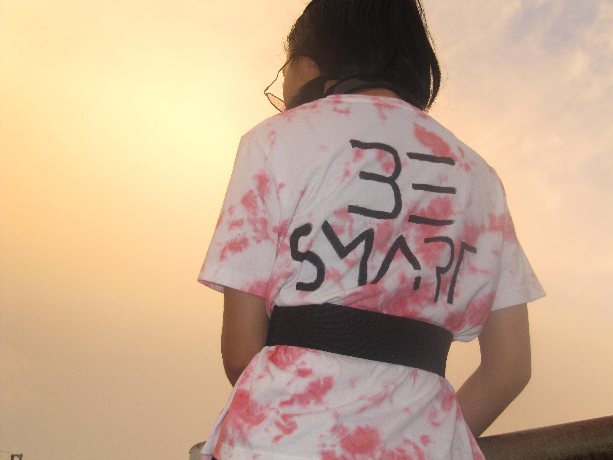
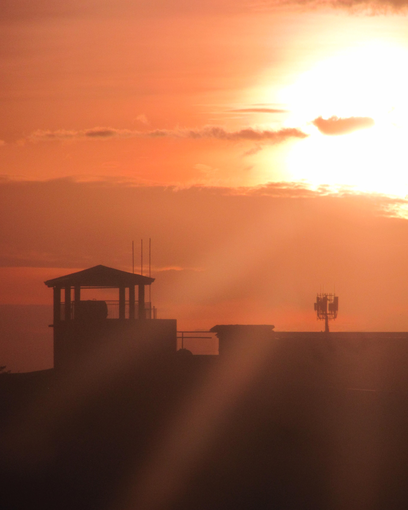
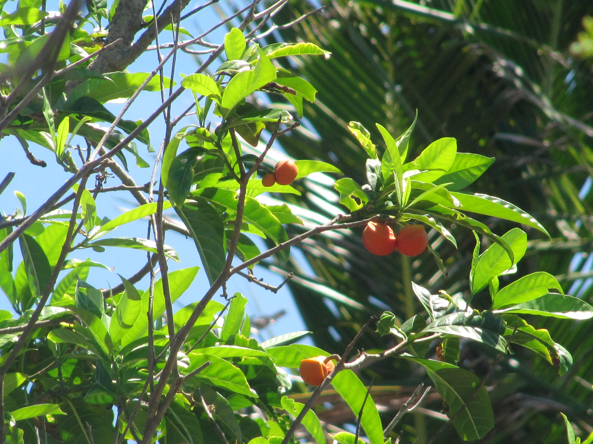
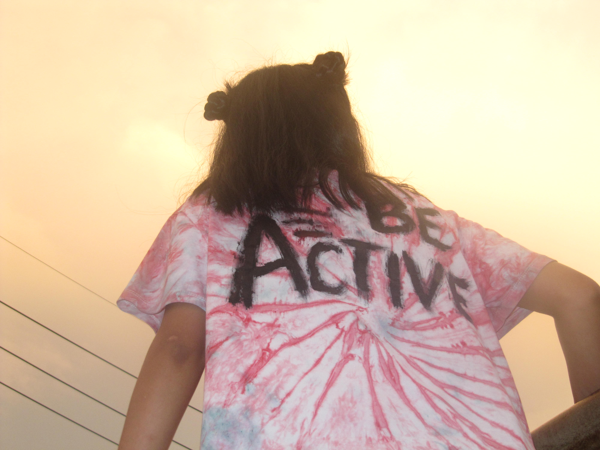
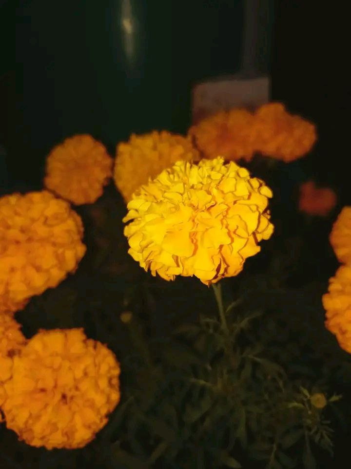
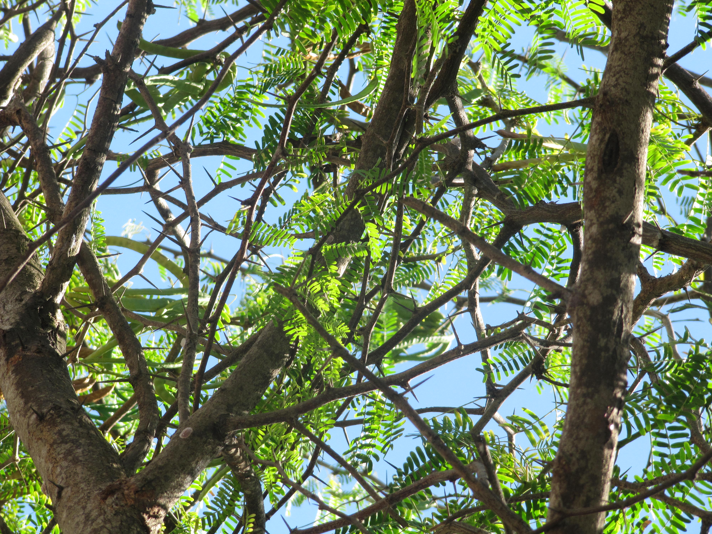
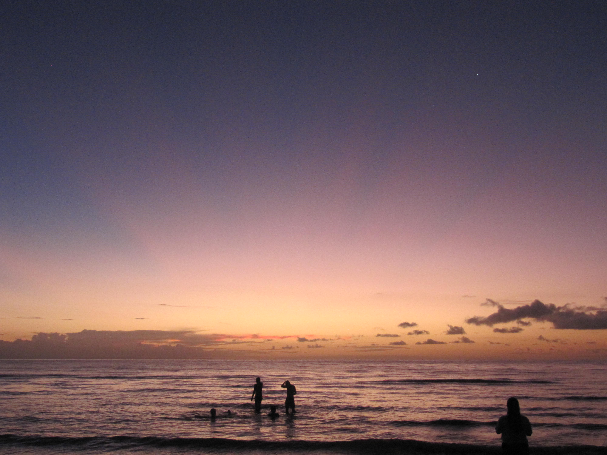
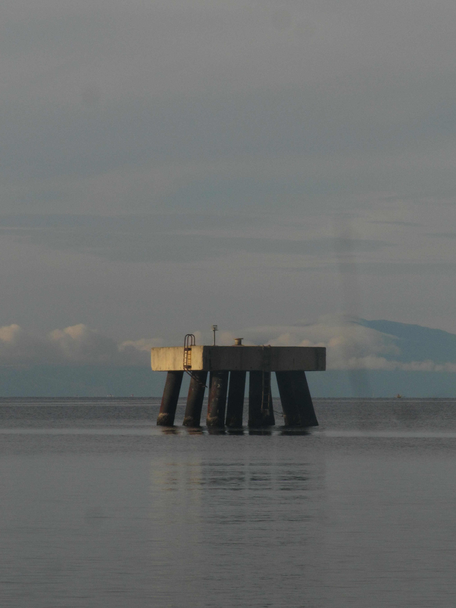
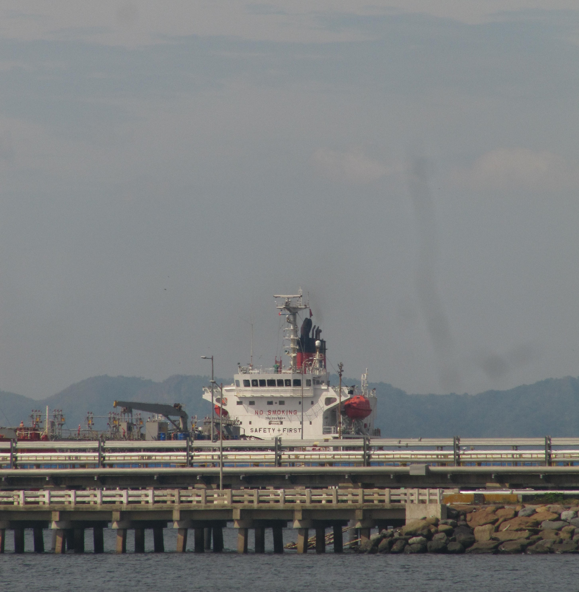

Let the colors be your refuge
I am a complicated person who enjoys capturing moments of life, and appreciating the beauty of nature. This website is a collection of my interests, memories, and excuses.
Life is full of unexpected moments, and I try to capture them all. By doing so, I am getting greedy to keep something that is fleeting and fictionally permanent. I want to hold on to those moments and cherish them forever, even if they are just a snapshot in time.
In the brink of snapping, may I be able to find beauty in the ordinary and the extraordinary, and may I be able to capture those moments that make life worth living. May I be able to find joy in the simple things, and may I be able to appreciate the beauty of the world around me.
"May time be always running along my side."










My life would never be this colorful without music. It is my escape from reality and a source of comfort and inspiration. A tavern I don't want to leave.
Quiet time to unwind and enjoy my favorite shows. Closest to realize my fantasies. A way to lose and find myself.
Just the simple act of walking and enjoying life. Trying to see the world from a different perspective. A movement that sometimes I hope lasts.
The escape of reality through the pages of fictional stories. A way to at least hope for tomorrow. Characters that become someone I can admire, loathe, and connect with unapologetically.
A coping mechanism when everything is overwhelming and feels no way out.
Collecting and organizing notebooks with different designs, sizes, types and thicknesses of paper.
Most of my hobbies are just simply lazing around to escape the reality I do not want to face.
2023 - Present
Bachelor of Information Technology
STI College - Rosario
2021 - 2023
Senior High School
Tanza National Trade School - Main
2017 - 2021
Junior High School
Tanza National Trade School - Main
Email: salada.329021@rosario.sti.edu.ph